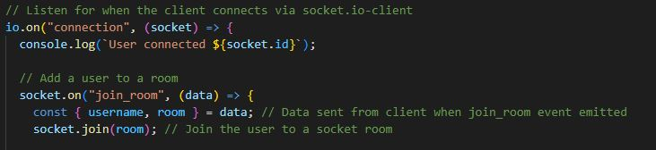
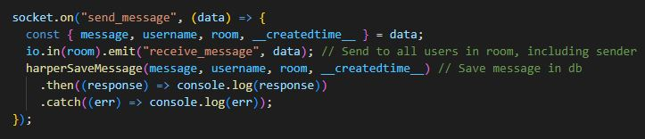
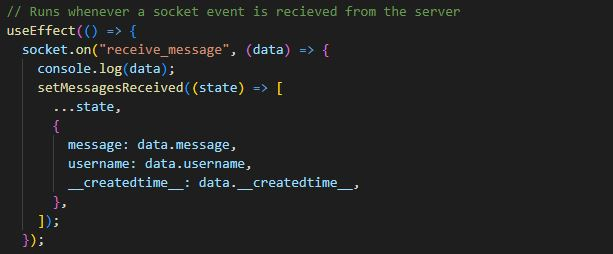

Introduction
I'd like to lead off by saying that this is NOT my own project. Rather
I followed Danny Adams tutorial on FreeCodeCamp. However, this project
really intrigued me for several reasons. First of all, I had been
exposed tro web sockets at work, and while I understood why/how we
used them, I still did not feel confident in understanding a simple
use case through the full stack. Additionally, I had been working on
designing a project called "Packster" (A collaborative group
packing/budgeting application) with my friend and we needed to use
sockets in order to acheive the collaboritve real time updating
functionality our app would require. Therefore, it made a lot of sense
to start with this project.
This project is super cool, and I won't step through the whole thing
since Danny Adams already did a wonderful job of that
here.
However I will highlight some major takeaways related to sockets:
Set up
Starting with the server we have some important set up. First, I'd
like to point out we are using socket.io, so everything will be
working under that assumption. First off, we create a basic http
server using "http" and "express". Then we will create our socket
based server by passing in our previous server into the "socket.io"
server constructor.
After this we will set up the function whose purpose is to listen for
the client connections/events. Inside this function we will create
functions for any events we desire. For example, this application uses
a few major ones for "join_room", "send_message", and "leave_room".

These events will be triggered from our frontend code. For example,
whenever a user joins it will trigger the "join_room" event which will
carry out that functionality on the server.
Why Sockets?
Now, this whole process may seem kinds similar to any other simple
http request, however there is one important and useful distinction
with sockets. Rather than an isolated http request performing some
capability and terminating, socket connections stay open. This is
important because they can receive data at any time, which in turn can
trigger updates in real time (no need to refresh to pick up changes).
Walk-through Example
Let's look at an example. When a user sends a message, we can see on
the frontend we call this "sendMessage" function. This function then
executes a "socket.emit" function for "send_message" that takes in the
username, room, message, and time stamp. We should then be able to
take a look at our server and see a "send_message" event handler. Sure
enough, we do, and it executes a very important line. That is, for the
current "room", it emits a "receive_message" event along with the
data. (Also note that at this point, this data is also saved off to
the Database to be fetched upon certain other events, namely grabbing
messages when a user joins/re-joins a room)

Now, let's jump back to the frontend. Inside "messages.js" we see a
useEffect hook. Inside this hook we see a line that specifically looks
for this 'receive_message' event and then sets the the received
messages array (the array housing message data shown to the user)
accordingly.

Conclusion
So now we've come full circle. We have traveled through the full stack
and saw how sockets allow us to have an application update in real
time with the actions of it's users.